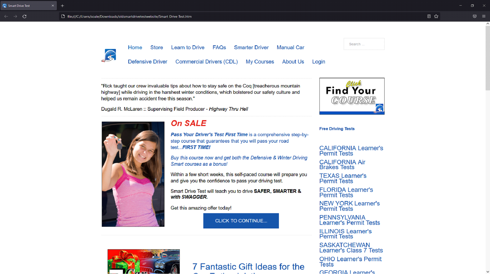
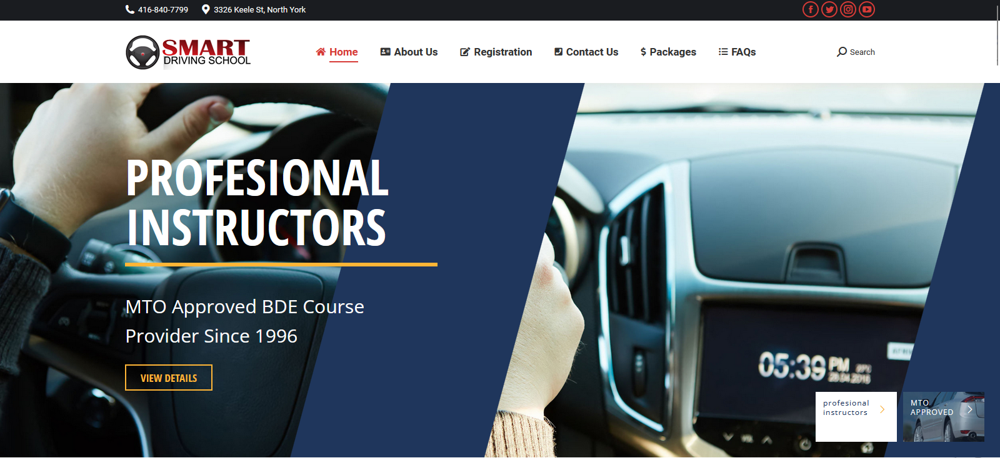

smartdrivetest.com (SDT) is a learning platform, teaching new and experienced drivers ways to improve driving. It is also an ecommerce website powered by Hikashop that sells online driving courses, podcasts, and books.
Process

Using the CMS Joomla!, I updated the old SDT. As seen in Figure 2. The older site appears rather plain. The website uses very little styling and heavily relies on HTML to decorate content. This makes the older site appear archaic as if it was a site designed from the early 2000s.

The look and feel of your website is crucial to your business model. It sets a distinct branding when competing with other businesses.
At my planning stage, I looked into existing websites with similar business models such as ICBC.com and smartdrivingschool.ca to use as references. After examining smartdrivingschool.ca, I was inspired by how the website positions the Hero image along with the positioning of the available services. Although smartdrivingschool.ca was a source of inspiration, the overall design of SDT’s landing page ultimately went differently.
I had several reasons to design the SDT’s landing page and styling differently. The main reason was to set this apart from its competitors like Smart Driving School. Another reason is the structural differences and the hierarchy of content provided by SDT. SDT also had different priorities compared to Smart Driving School. SDT priorities include purchasing audiobooks (driving), listening to the podcasts, booking practice drives, and writing practice tests. Services towards teaching new drivers was a top priority. The formatting of content was also a determining factor towards my design decisions.
I played around with hover functions in conjunction with CSS animations to add a neat effect for the buttons seen in Figure 4.
I also created an animated footer using CSS found on every page as seen in Figure 5. Using the transform rotate selector and preserve-3D property creates a depth of field effect for the moving cars.
Another major design I made towards the landing page was the use of scroll storytelling. As the user scrolls down, the user gathers a summary for what the site is about and what services are offered. When a user opens the page, they would be presented with the major services provided first. As they continue scrolling down they learn a bit about the owner of SDT, and then some featured podcasts. While keeping information concise, users are featured with “read more” links if they choose to see more of a specific content.
The landing page also features the latest SDT youtube video. To always display the latest video I had to embed the SDT's youtube playlist link in the Iframe tag as shown below
I also stylized the design for the listing pages template. This template lists available products, services, and courses. The style guide for the template is similar to the landing page but it has some minor differences.
Reflection
After leaving Cybersalt Consulting, SDT has been fully functional since. A large number of customers use this site today whether for purchasing services, taking courses, or listening to podcasts. Rick August, the owner of Smart Drive Test, very much appreciates what I've done with the landing page, especially my CSS Animations and considers this a nice touch towards the branding.